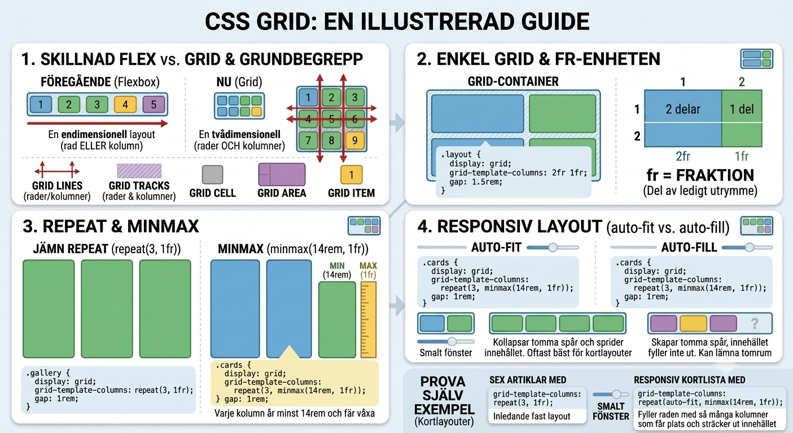

Modul 4
Kap 4.2 - Grid för sidlayouter
CSS Grid används när layouten behöver rader och kolumner samtidigt.
Mål
- Förstå skillnaden mellan flexbox och grid.
- Kunna skapa kolumner och rader med CSS Grid.
- Känna igen begrepp som cell, track, line, area och item.
- Använda
repeat,fr,minmax,auto-fitochauto-fill.
Tvådimensionell layout
Grid passar när du vill kontrollera både kolumner och rader. En grid-container innehåller grid-items. Mellan rader och kolumner finns grid lines. Ytan mellan linjerna bildar celler och större områden kan beskrivas som grid areas.
An Interactive Guide to CSS Grid visar CSS Grid med interaktiva exempel. Sidan låter dig se hur kolumner, rader, fr, gap, grid lines och placering förändras när värdena ändras. Den är bra som visuell förklaring när kodexempel känns abstrakta.

En enkel grid
.layout {
display: grid;
grid-template-columns: 2fr 1fr;
gap: 1.5rem;
}fr betyder fraction, alltså en del av det lediga utrymmet. Här får första kolumnen två delar och andra kolumnen en del.
repeat och minmax
.gallery {
display: grid;
grid-template-columns: repeat(3, 1fr);
gap: 1rem;
}repeat(3, 1fr) skapar tre lika breda kolumner.
.cards {
display: grid;
grid-template-columns: repeat(auto-fit, minmax(14rem, 1fr));
gap: 1rem;
}minmax(14rem, 1fr) säger att varje kolumn minst ska vara 14rem men får växa. auto-fit fyller raden med så många kolumner som får plats.
auto-fit och auto-fill
Både auto-fit och auto-fill skapar responsiva kolumner. I praktiska kortlayouter passar auto-fit ofta bäst eftersom tomma spår kollapsar och innehållet får mer plats.
Interaktivt exempel
Ändra värdena och se hur grid-container, grid-items, tracks, cells, gap och areas påverkas.
Tre kolumnspår skapas med repeat(3, 1fr). Varje ruta mellan grid lines är en cell.
.container {
display: grid;
}Prova själv
- Skapa sex artiklar med rubrik och text.
- Lägg dem i en container med
display: grid. - Testa först
repeat(3, 1fr). - Byt sedan till
repeat(auto-fit, minmax(14rem, 1fr))och ändra fönsterbredden.